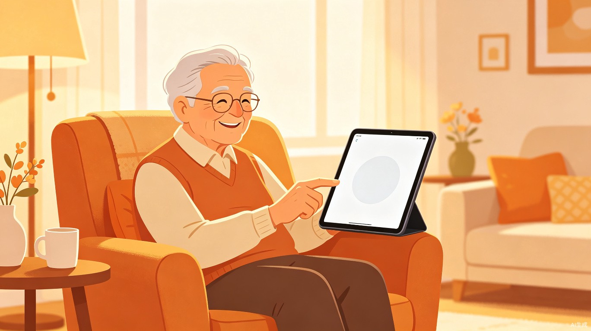

让AI成为银发族的贴心管家 — 不学也能用，开口就搞定

当AI技术飞速发展时，数亿老年人却因为一道无形的"数字鸿沟"被挡在门外
围绕老年人的真实需求设计，每一处细节都为"好操作、看得清、听得懂"而生
语音记录血压、血糖、心率，自动生成健康周报，异常时主动提醒
设置每日服药计划，到点语音+大字双重提醒，记录服药情况
问天气、查养生、听新闻、学做菜，像聊天一样获取信息，支持方言
一键呼叫子女或120，自动发送位置信息和健康状况，多级联系人机制
听戏曲、讲笑话、回忆往事聊天，AI陪伴缓解孤独感
语音说"帮我打给儿子"即可通话，子女端可远程关注父母状态
从清晨到夜晚，银龄AI助手陪伴在每一个日常瞬间
"早上好，张爷爷！今天天气晴，气温22度，适合出去散步。您今天9点有社区活动，别忘了带水杯哦。"
"该吃降压药了，药在茶几上的白色小盒子里。吃完后记得告诉我，我帮您记录。"
"给我放一段京剧《空城计》吧。" — "好的，正在为您播放。要不要顺便听听明天的天气？"
"帮我给女儿打个电话" — "已为您拨通女儿的电话。" 独居老人的安全网，关键时刻靠得住。
每一处设计细节都遵循老年群体的视觉和操作特点，让技术真正为老人服务
一组直观的对比，看看银龄AI助手带来的改变
| 生活场景 | 没有银龄AI助手 | 有了银龄AI助手 |
|---|---|---|
| 查看天气 | 打开天气App → 找图标 → 眯眼看数字 → 可能点错广告 困难 | 说"今天天气怎么样" → 立刻播报 一句话搞定 |
| 管理用药 | 纸笔记录 → 容易忘 → 吃重复或漏吃 风险高 | 到点语音提醒 → 吃完说"我吃了" → 自动记录 安全可靠 |
| 身体不适 | 翻通讯录 → 找不到号码 → 忍着或打120但说不清位置 焦虑 | 说"我不舒服" → AI询问症状 → 自动呼叫子女并发送定位 安心 |
| 想念子女 | 打开微信 → 找到联系人 → 打字或找语音按钮 → 可能点错 繁琐 | 说"帮我给儿子打电话" → 立刻接通 像打电话一样简单 |
| 无聊时刻 | 看电视换台 → 不知道看什么 → 发呆 孤独 | 说"给我讲个笑话" / "放段戏" → 有问有答，有人陪聊 陪伴 |
银龄AI助手为每一个真实的人而设计
"孩子们都在外地，我不太会用智能手机，怕点坏了要花钱修。"
"我有高血压，每天要吃药，但经常忘记吃没吃。想查查养生知识又不知道哪里查。"
"我在外地工作，最担心老爸一个人在家。想找个能随时知道他在干嘛的办法。"